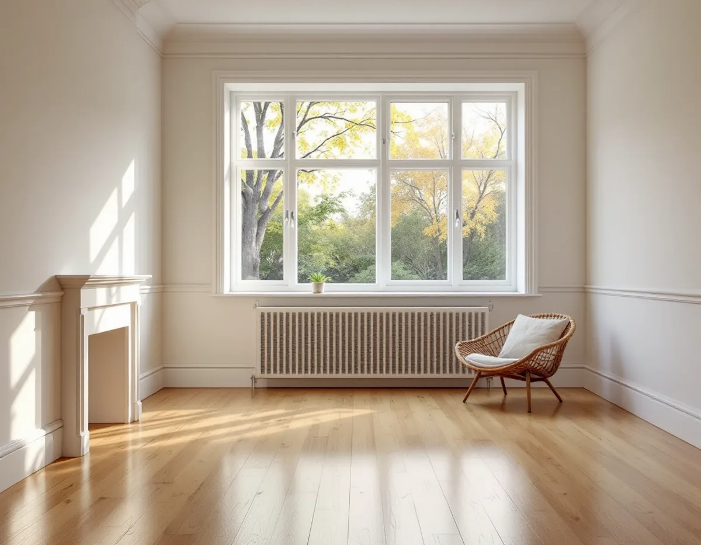
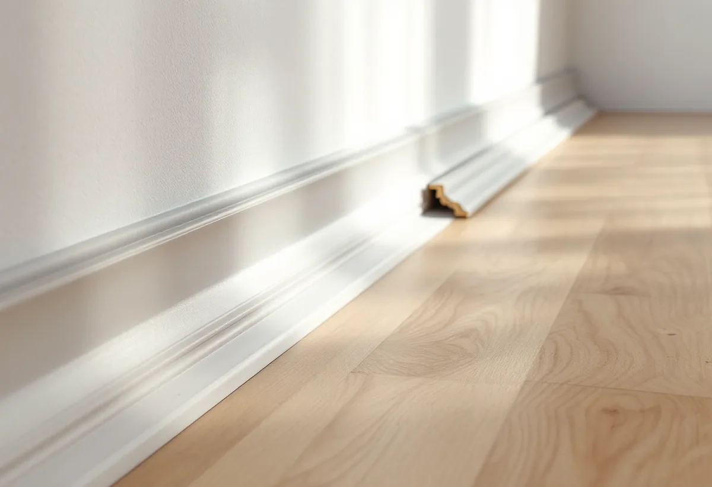

Platsbesök
Vi ser hur golvet är byggt och hur listerna sitter, och mäter fuktkvoten i träet.
I ett radhus eller kedjehus kan trägolvet ligga på reglar ovanpå en betongplatta. Det påverkar inte så mycket hur golvet slipas, men desto mer det som händer runt omkring: glipan vid väggen, listerna och fukten under golvet. Geal Entreprenad AB slipar och ytbehandlar trägolv i radhus, kedjehus och villor i Upplands Väsby, och vi börjar med att se hur golvet är byggt.

Kommunens kunskapsunderlag för kulturmiljö beskriver hur de östra kommundelarna växte fram med en stor andel småhus och radhus under 1960- och 70-talen. Grupperna av atriumhus, radhus och kedjehus ligger längs säckgator, med bilfria gång- och cykelstråk mellan områdena. Husen är rationellt byggda i en eller två våningar, eller i två våningar i suterräng, med platta eller flacka tak. Exempel finns i Sjukyrkoberget, Skälby, Fresta och Odenslunda, men också centralt i Apoteksskogen.
I Väsby finns också bebyggelse från Bo85, som enligt underlaget var den första renodlade bostadsmässan i Sverige. I småhusområdet Runby Backar visade Byggforskningsrådet hur småhusbyggandet och grupphusområden skulle kunna utvecklas.
Underlaget påpekar att varsamhetskravet och det hårdare kravet i förvanskningsförbudet gäller vid såväl exteriöra som interiöra ändringar, även om värdena inte har pekats ut tidigare.

Svenska Byggnadsvårdsföreningen har fått en fråga om en springa mellan golv och sockel som syntes när kvartsstaven togs bort inför en slipning. I lite modernare hus, främst från 1950- och 60-talen, kan glipan enligt föreningen vara en del av konstruktionen. Husen byggdes då med platta på mark och uppreglade golv direkt på betongplattan, och för att golvet inte skulle ruttna av den uppträngande markfukten skulle den fukthaltiga luften under golvet ventileras bort. Då var glipan viktig för luftomsättningen.
En sådan glipa tätar vi inte med fogmassa eller spackel efter slipningen. Föreningen påpekar dessutom att spackel smulas sönder av rörelserna i träet, och att en kvartsstav eller liten list är det mest hållbara sättet att dölja en glipa. Listerna tas bort före slipningen, märks upp och sätts tillbaka på samma plats.
Golvbranschens riktlinjer för slipning säger att ett trägolv inte ska ytbehandlas när fuktkvoten i träet ligger utanför 6–10 procent, eller när luftfuktigheten inomhus är utanför 30–60 procent relativ fuktighet. Problemet ligger enligt riktlinjerna inte i själva luftfuktigheten utan i variationerna, eftersom rörelserna kan försämra ytbehandlingens resultat och ge sprickor i spacklade fogar. Vi mäter därför fuktkvoten i golvet innan behandlingen.
Luktar det unket i nedre planet kan det finnas skäl att undersöka golvet närmare. Byggnadsvårdsföreningen föreslår i ett svar om mögellukt i ett torp att man mäter fuktkvoten i golvplanken och jämför med ställen som är öppna, till exempel en vägg eller ett innertak – golvet bör ha högst någon procent högre fuktkvot. Man kan också lägga en plast på ungefär en kvadratmeter på golvet och se om det samlas fukt under den.
Är golvet för fuktigt väntar ytbehandlingen tills fuktkvoten ligger rätt. Om radon, markfukt och byte av golv i nedre planet finns det mer under golvläggare i Upplands Väsby.
Vi ser hur golvet är byggt och hur listerna sitter, och mäter fuktkvoten i träet.
Slipning, lister och ytbehandling står som egna poster.
Socklar och kvartsstavar märks upp och tas bort före slipningen.
Golvet slipas i flera steg, och kanterna slipas för sig.
Behandlingen läggs på när fuktkvot och luftfuktighet ligger rätt.
Listerna sätts tillbaka, så att glipan döljs men får vara öppen.
I ett radhus eller kedjehus som du äger och bor i räknar Skatteverket slipning av golv som rotarbete. Är huset en bostadsrätt ska arbetet göras inne i bostaden och ingå i ditt underhållsansvar enligt stadgarna. Du och företaget har ett gemensamt ansvar för att ta reda på om arbetet ger rätt till avdrag.
Bara arbetad tid på plats hos dig ger avdrag, med högst 30 procent av arbetskostnaden. Gränsen är 50 000 kr i rotavdrag per person och år och 75 000 kr för rot och rut tillsammans. Material ger inget avdrag. Geal drar avdraget direkt på fakturan.
Golvytan, hur många lister som ska tas loss och sättas tillbaka, om golvet behöver torka innan behandlingen och vilken yta du väljer. Efter ett gratis platsbesök får du ett skriftligt kostnadsförslag.
Parkett, trägolv, klinker och slipning.
Golvläggning i Stockholm →Takbyte, takbesiktning och plåtarbeten.
Takläggare i Upplands Väsby →Bollstanäs, Vilunda och Runby.
Takrenovering i Upplands Väsby →Potten, VA-avgiften och Bollstanäs.
Attefallshus i Upplands Väsby →Radhus, suterräng och samfälld VA.
Badrumsrenovering i Upplands Väsby →Karta, VA och tomtgräns.
Byggföretag i Upplands Väsby →Sekelskiftesvillorna längs Gamla vägen.
Fasadmålning i Upplands Väsby →Radhus från 70-talet och hus från bomässan.
Fasadrenovering i Upplands Väsby →Inflygning, trafik och tystare fönster i Väsby.
Fönsterbyte i Upplands Väsby →Kedjehusens fönster, kulör och beslag.
Fönsterrenovering i Upplands Väsby →Kedjehus, suterräng och radon.
Golvläggare i Upplands Väsby →Radhus, kedjehus och atriumhus.
Köksrenovering i Upplands Väsby →Radhus, kedjehus och villor i Väsby.
Målare i Upplands Väsby →Rännor, stuprör och radhusplåt i Väsby.
Plåtslagare i Upplands Väsby →Altan, plank och förråd vid radhus och kedjehus.
Snickare i Upplands Väsby →Nytt tak, solceller och väderradarn.
Takbyte i Upplands Väsby →Radhusen och plasttapeten.
Tapetsering i Upplands Väsby →Radhus, kedjehus och utpekade områden.
Tillbyggnad i Upplands Väsby →Äldre villor, radhus och varsamhet.
Totalrenovering i Upplands Väsby →